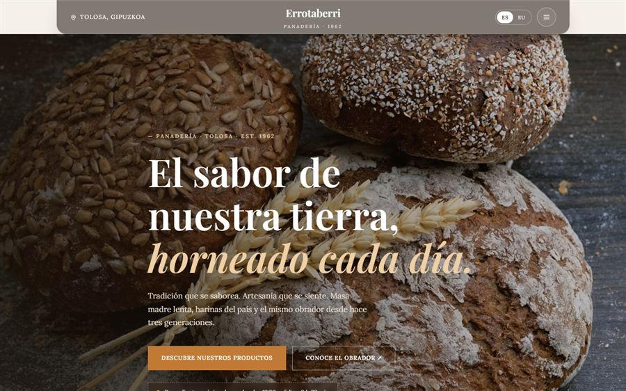

Las tres opciones, de un vistazo
| Dominio | Para qué encaja | Lo que hay que saber |
|---|---|---|
| .com | Cualquier negocio; el más reconocido | El más fácil de recordar, pero muchos nombres cortos ya están cogidos |
| .es | Negocios que trabajan en España | Transmite "negocio de aquí"; suele ser barato y quedan nombres libres |
| .eus | Negocios que quieren mostrar su vínculo con el euskera y la cultura vasca | Identidad clara; algo menos conocido fuera de Euskal Herria |
Ninguno es mejor que los otros en abstracto. La decisión depende de tus clientes y de qué nombre está libre.
¿El dominio afecta al SEO?
Mucho menos de lo que se suele creer. Google trata el .com y el .eus como dominios genéricos, y el .es como dominio de España. En la práctica, para un negocio local de Tolosa o Donostia que trabaja en su zona, ninguno de los tres te sube ni te baja. Lo que te posiciona es la ficha de Google Business, las reseñas, que la web cargue rápido y que diga claramente qué haces y dónde.
Tampoco sirve de mucho meter palabras clave en el dominio. Un "disenowebtolosa-barato.com" no posiciona mejor que el nombre de tu negocio, y da bastante peor imagen en una tarjeta.
Cómo elegir el nombre en cinco comprobaciones
- Díctalo por teléfono. Si tienes que deletrearlo o explicar dónde va el guion, busca otro.
- Cuidado con la ñ, las tildes y la tx. "Panadería" se escribe "panaderia" en el dominio; "Errotatxo" se entiende bien, pero comprueba que no haya dos formas de escribirlo.
- Corto antes que descriptivo. El nombre del negocio vale más que una frase.
- Mira si el .com y el .es están libres aunque elijas otro: si alguien los tiene, puede que se lleve algún despistado.
- Comprueba Instagram y Google Business. Lo ideal es usar el mismo nombre en todos lados.

Lo más importante: que el dominio sea tuyo
Esto importa más que la terminación. El dominio tiene que estar registrado a tu nombre, no al de la agencia ni al del sobrino que te hizo la web. Si no, el día que quieras cambiar de proveedor puedes encontrarte con que la dirección que llevas años imprimiendo en tus tarjetas no es tuya.
Pregunta siempre, por escrito: ¿a nombre de quién está registrado? ¿Tengo acceso a la cuenta? ¿Qué pasa si dejo de pagar el mantenimiento? En mi caso el dominio se registra a nombre del cliente y la web es suya: si un día nos despedimos, se la lleva entera.
Cuánto cuesta un dominio
Un dominio cuesta poco al año, pero conviene fijarse en dos trampas:
- El precio de renovación. Muchos registradores ofrecen el primer año casi gratis y la renovación cuesta varias veces más. Mira siempre el precio del segundo año.
- Los extras que no necesitas. "Protección de privacidad premium", "SEO del dominio", paquetes de correo... la mayoría sobran para un negocio local.
Los precios exactos cambian según el registrador y el año, así que compara antes de comprar. Si te hago la web, el dominio va incluido el primer año y después entra en el mantenimiento; lo tienes explicado en cuánto cuesta mantener una web al año.
"Si dudas entre dos, coge el que sea más fácil de decir en voz alta. Y si el presupuesto da, registra también el .com o el .es de tu nombre y redirígelos a tu web: es barato y evita que otro se quede con él."
¿No sabes qué dominio coger?
Te miro qué nombres están libres y te recomiendo uno, sin compromiso.
Preguntas frecuentes
¿Es mejor un dominio .eus o .es para el SEO?
Para un negocio local da prácticamente igual. Google trata el .eus como dominio genérico y el .es como dominio de España, pero lo que decide tu posición son la ficha de Google Business, las reseñas y la calidad de la web.
¿Puedo tener varios dominios apuntando a la misma web?
Sí. Es habitual registrar el .com y el .es del mismo nombre y redirigir uno al otro. Lo importante es que haya una única dirección principal y que las demás redirijan a ella.
¿A nombre de quién tiene que estar el dominio?
A nombre del negocio o del propietario, siempre. Si está a nombre de la agencia, cambiar de proveedor se complica. Pide por escrito a nombre de quién se registra.
¿Se puede cambiar de dominio más adelante?
Sí, pero hay que hacerlo con redirecciones para no perder lo que ya habías ganado en Google. Es mejor pensarlo bien al principio.
Sigue leyendo: cómo hacer una web en euskera y castellano y cuánto cuesta realmente una web profesional. Si prefieres ir al grano, mira mis precios cerrados.